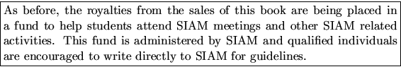

Since the release of version 2.0 of the LAPACK software and the second edition of the Users' Guide in 1994, LAPACK has been expanded further and has become an even wider community effort. The publication of this third edition of the Users' Guide coincides with the release of version 3.0 of the LAPACK software. Some of the software contributors to this release were not original LAPACK authors, and thus their names have been credited in the routines to which they contributed.
Release 3.0 of LAPACK introduces new routines, as well as extending the functionality of existing routines. The most significant new routines and functions are:
All LAPACK routines reflect the current version number with the date on the routine indicating when it was last modified. For more information on revisions to the LAPACK software or this Users' Guide please refer to the LAPACK release_notes file on netlib. Instructions for obtaining this file can be found in Chapter 1.
The following additions/modifications have been made to this third edition of the Users' Guide:
Chapter 1 (Essentials) includes updated information on accessing LAPACK and related projects via the World Wide Web.
Chapter 2 (Contents of LAPACK) has been expanded to discuss the new routines.
Chapter 3 (Performance of LAPACK) has been updated with performance results for version 3.0 of LAPACK.
Chapter 4 (Accuracy and Stability) has been extended to include error bounds for generalized least squares.
Appendices A and B have been expanded to cover the new routines.
Appendix E (LAPACK Working Notes) lists a number of new Working Notes, written during the LAPACK 2 and ScaLAPACK projects (see below) and published by the University of Tennessee. The Bibliography has been updated to give the most recent published references.
The Specifications of Routines have been extended and updated to cover the new routines and revisions to existing routines.
The original LAPACK project was funded by the NSF. Since its completion, four follow-up projects, LAPACK 2, ScaLAPACK, ScaLAPACK 2 and LAPACK 3 have been funded in the U.S. by the NSF and ARPA in 1990-1994, 1991-1995, 1995-1998, and 1998-2001, respectively.
In addition to making possible the additions and extensions in this release, these grants have supported the following closely related activities.
A major effort is underway to implement LAPACK-type algorithms for distributed memory machines. As a result of these efforts, several new software items are now available on netlib. The new items that have been introduced are distributed memory versions of the core routines from LAPACK; sparse Gaussian elimination - SuperLU, SuperLU_MT, and distributed-memory SuperLU; a fully parallel package to solve a symmetric positive definite sparse linear system on a message passing multiprocessor using Cholesky factorization; a package based on Arnoldi's method for solving large-scale nonsymmetric, symmetric, and generalized algebraic eigenvalue problems; and templates for sparse iterative methods for solving Ax=b. For more information on the availability of each of these packages, consult the following URLs:
http://www.netlib.org/scalapack/
http://www.netlib.org/linalg/
Alternative language interfaces to LAPACK (or translations/conversions of LAPACK) are available in Fortran 95, C, and Java. For more information consult Section 1.12 or the following URLs:
http://www.netlib.org/lapack90/
http://www.netlib.org/clapack/
http://www.netlib.org/java/f2j/
The performance results presented in this book were obtained using computer resources at various sites:
We would like to thank the following people, who were either not
acknowledged in previous editions, or who have made significant
additional contributions to this edition:
Henri Casanova,
Tzu-Yi Chen,
David Day,
Inderjit Dhillon,
Mark Fahey,
Patrick Geoffray,
Ming Gu,
Greg Henry,
Nick Higham,
Bo Kågström,
Linda Kaufman,
John Lewis,
Ren-Cang Li,
Osni Marques,
Rolf Neubert,
Beresford Parlett,
Antoine Petitet,
Peter Poromaa,
Gregorio Quintana,
Huan Ren,
Jeff Rutter,
Keith Seymour,
Vasile Sima,
Ken Stanley,
Xiaobai Sun,
Françoise Tisseur,
Zachary Walker, and
Clint Whaley.
